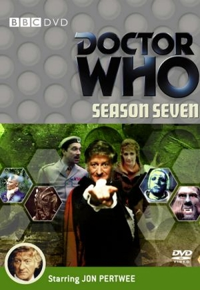
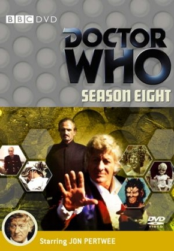
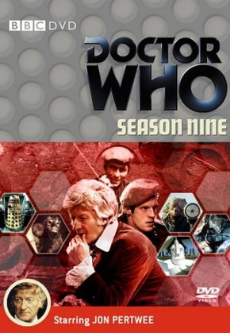
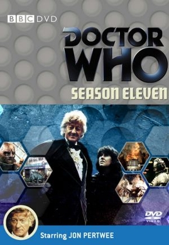

3º Doutor

Lutador nato, às vezes mais sério do que o normal. Na maior parte de seu tempo de vida, foi proibido de viajar no tempo, devido às suas interferências anteriores. Diferentemente de seus predecessores, este Doutor é um homem de ação e, quando necessário, utilizava de suas habilidades em Aikido Venusiano. Ele permaneceu exilado na Terra durante boa parte de sua existência e, trabalhando para a UNIT, tinha o hábito de empregar sua mente brilhante em invenções, dentre as quais, seu querido carro, Bessie. Esta encarnação era mais “cavalheiresca” e, de certa forma, oposta ao 2º Doutor, o que acarreta desentendimentos entre os Doutores quando as duas encarnações do personagem se encontram. Inicialmente, o terceiro Doctor teve Liz Shaw como assistente, depois passou a se aventurar com sua companheira mais querida, Jo Grant, e perto de seu fim, levou Sarah Jane Smith à TARDIS.
O 3º Doutor, interpretado por Jon Pertwee (1919 – 1996), teve 5 temporadas com 24 arcos exibidos de 1970 a 1974, totalizando 128 episódios de 25 minutos.
Companheiros: Liz, Jo, Sarah Jane.
Jon Pertwee teve uma participação nos especiais de 20 e 30 anos da série, The Five Doctors and Dimensions In Time, respectivamente.
Os posts com informações e curiosidades dos arcos do 3º Doutor, portanto iremos disponibilizá-los aos poucos. Porém, você pode assistir a toda era do 3º Doutor online e legendada abaixo.
Está disponível no site a função torrent, com cada temporada completa, mas o site não recebe vários tipos de arquivos, só recebe documento docx. Você tem que entrar no arquivo e copiar o link magnet., depois vai no aplicativo BitTorrent ou uTorrent, e aperte no ícone: adicionar torrent da URL. Aí cola o link magnet. e aperta OK, que já vai começar a abaixar.
Em Breve Links Ativado
SÉRIE
7ª TEMPORADA

8ª TEMPORADA

9ª TEMPORADA

10ª TEMPORADA
11ª TEMPORADA

Artigo Escrito por Dhannyllo Souza